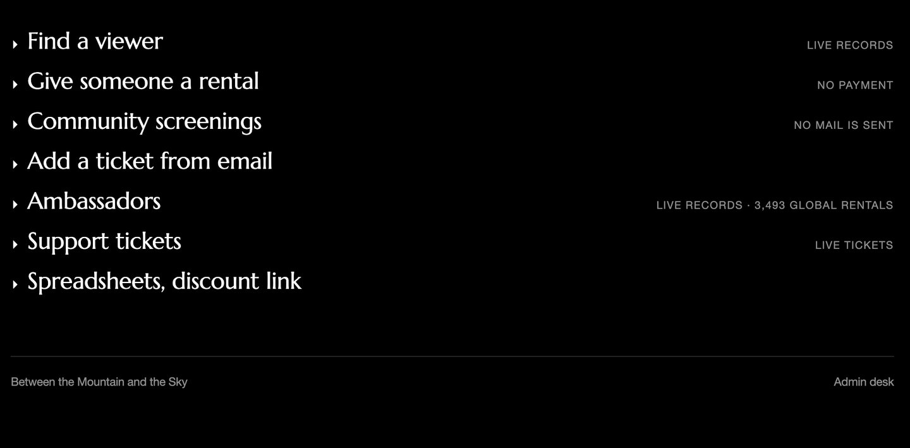
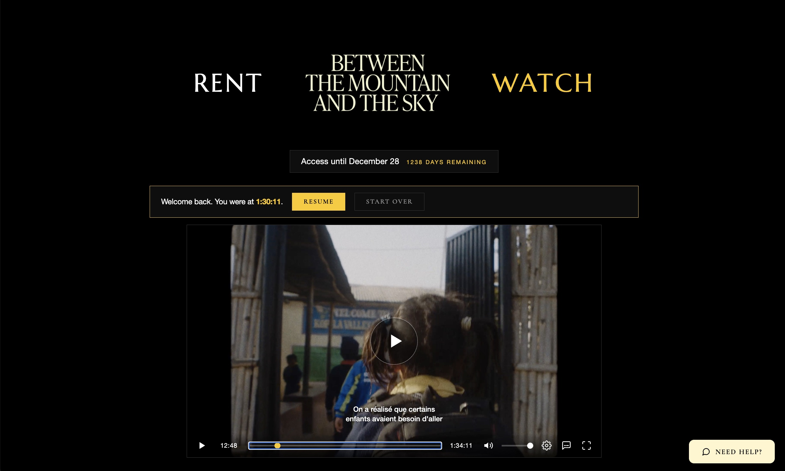
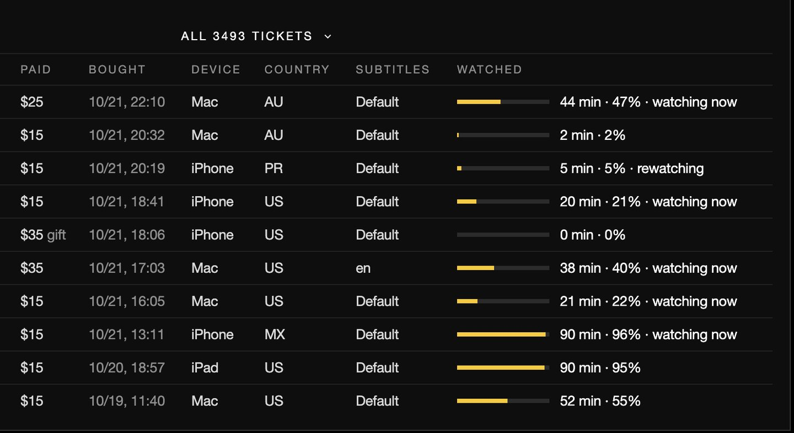
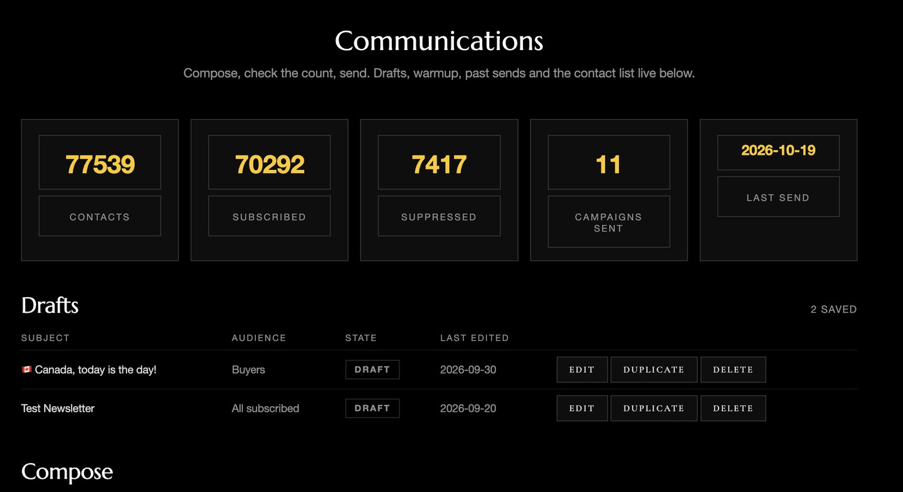
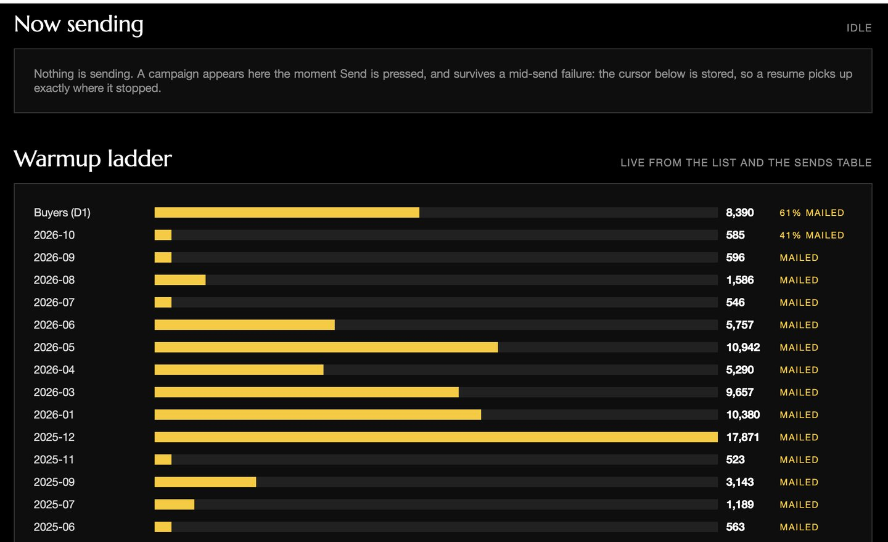
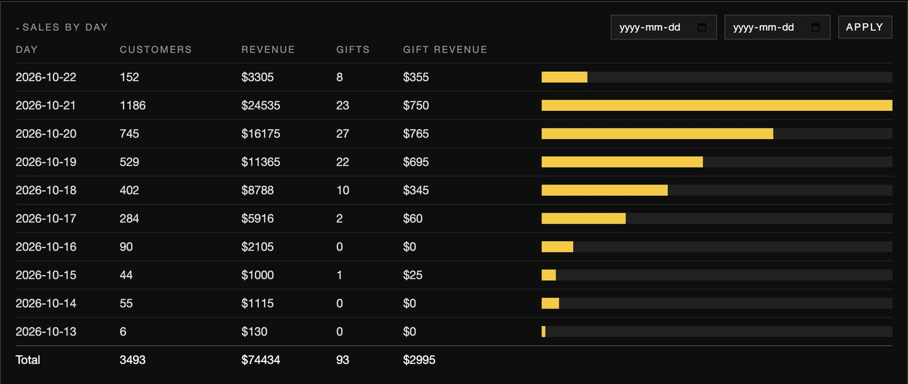
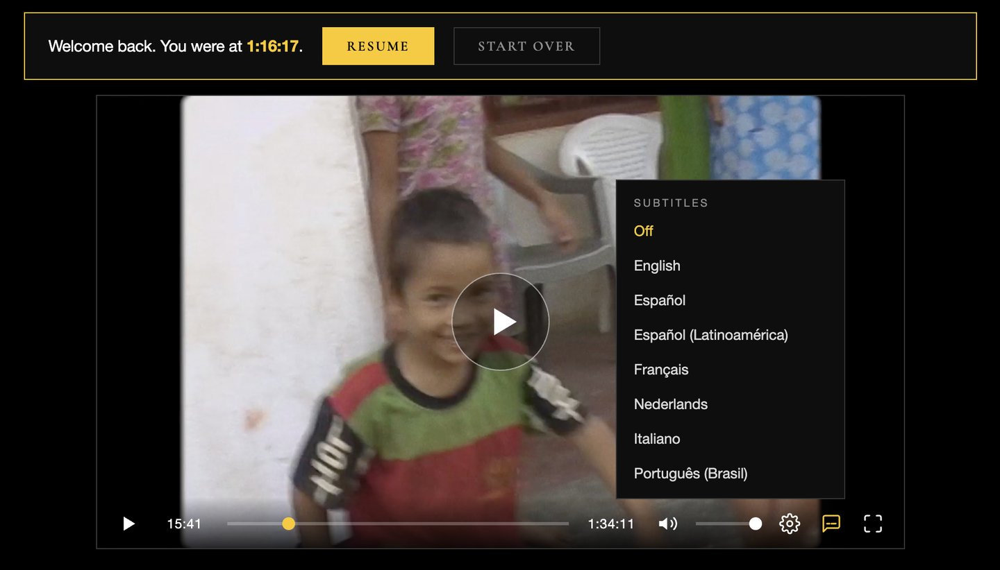
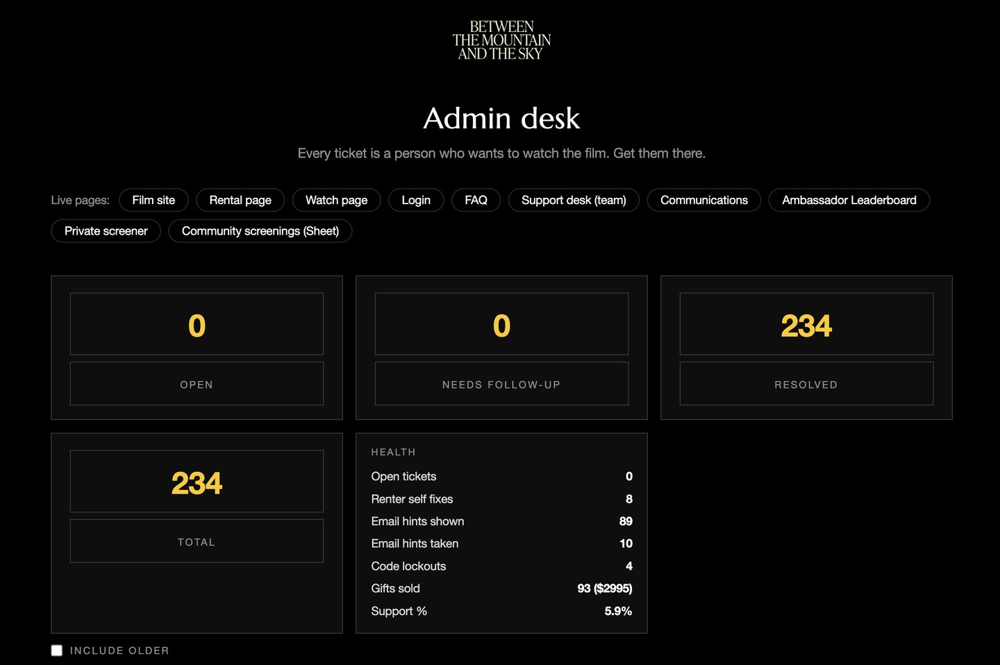

Film Rental Platform
The Brief
- Be our own distributor, no rental platform between the film and its audience
- Off Vimeo, onto ground we control, signed playback so a watch link works for the renter and nobody else
- Subtitles and burnt-in translations in our own hands, so the film crosses language barriers the way it was meant to
- Rent and watch with no account and no password, a link in the inbox is the key
- Head off tech support before it starts, one answer that fixes it instead of a week of back and forth

The build
Pay-what-you-want Stripe checkout, gift rentals and one-time discount links, signed video playback, a save-ahead option for slow connections, and a screening pass that loads the whole film at full quality for a host or group.
The player carries subtitles in eight languages, English closed captions, and the burnt-in translation lines as a track of their own, and the subtitles went out with the film master for educational sales.
Behind it sit CRM sync, its own mail engine with unsubscribe and bounce handling, a live analytics desk, a team desk that can grant a free rental, look up any payment and show sales by day, and a support desk where the team answers customers by name, with per-person keys and ticket claiming. A refund stops playback.



Big wins
- Owning delivery got rid of a contract. 205 TB of film streamed in a year, against a 2 TB-a-month Vimeo allowance, meant a forced ~$24,000-a-year Enterprise deal if it stayed on Vimeo. It didn't.
- More than 5,000 people rented it in the first window, and at least 3,700 watched to the very end.
- The same system reopened for a second window: 1,353 earlier rentals were extended in one step, with a file kept to undo it.
- Support answers before anyone has to write in. A help chat walks people through the common problems and files a ticket when it can't help. More than 300 tickets have gone through it, and each customer's whole history sits on one card, including 36,133 payments from the old system.
- Its own mail system: more than 22,000 letters sent in paced batches, with bounces, complaints and unsubscribes tracked.
- Reminder letters that only reach people whose rental is still running, never past renters.


The hard parts
- A watch link with no password that strangers can't abuse. Codes lock after 10 wrong tries in an hour, no address can hold more than 6 open links, and the sign-in page gives the same answer whether or not an email bought the film, so nobody can fish for who rented.
- Playback that lasts the whole evening. The video address expires every 6 hours, so when it lapses mid-film the player quietly fetches a fresh one and picks up at the same second.
- Money that never counts twice. Every rental is tied to its Stripe payment, so a payment notice that arrives twice can't make two rentals, and charges that didn't come through the portal are ignored.
- Gifts that can't go missing. A gift's clock only starts when the recipient first signs in, and an unopened gift survives even if they rent the film for themselves.
- Selling everywhere except Canada during the film's theatre run there, without locking out anyone who already rented. The block stops buying, never signing in or watching.
- Phone networks that put many people behind one address. The limits on each address had to sit at 30 or more so real viewers weren't turned away.
- Two systems running at once. The old CRM kept running alongside the portal, and when its forms fail, the update waits and replays on the hour instead of getting lost.

